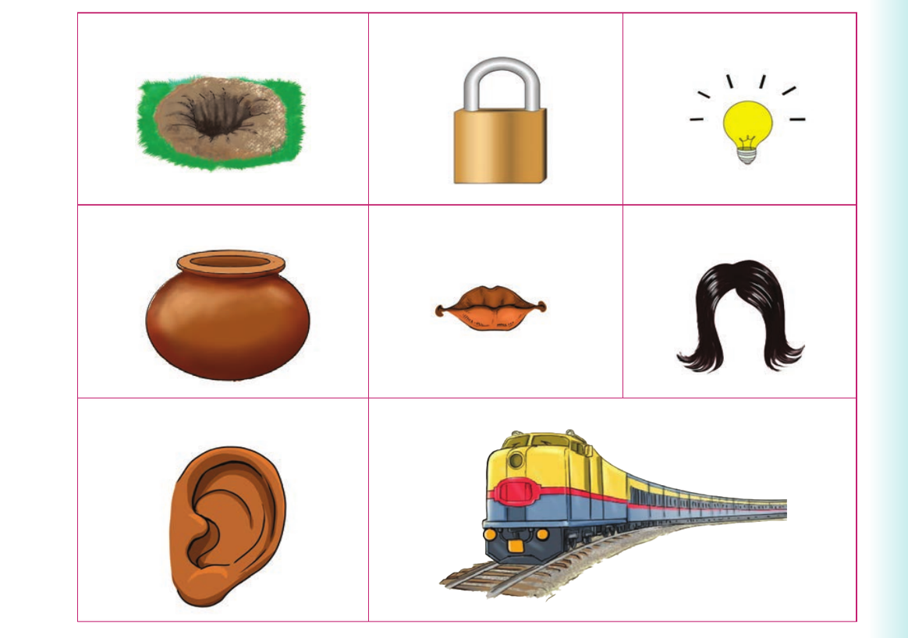

I delete sounds at the beginning of words or I delete letters at the beginning of words and sign the words
I delete sounds at the beginning of words or I delete letters at the beginning of words and sign the words.
Activity 1
1. Pronounce or sign the following words:
| clock | box | rice | twig | fear |
|---|---|---|---|---|
| flip | strain | spit | spot | flight |
2. Delete the first sounds of the words in (1). Or delete the first letters in (1) and sign the words.
3. Use the words formed in (2) to name the pictures orally or using sign language.

(a) A hole. (b) A lock. (c) A light. (d) A pot. (e) Lips. (f) A wig. (g) An ear. (h) A train.